Behavioral risk factors are behaviors that increase the possibility of disease, such as smoking, alcohol use, bad eating habits, and not getting enough exercise. Because they are behaviors, it is possible for individuals to modify these risk factors to help prevent many types of chronic diseases and premature death.
Obesity
The rising prevalence of overweight and obesity among both adults and children are of serious concern nationwide. More than one-third of US adults are obese [1]. Nationwide, the prevalence of obesity among children and adolescents has tripled compared to the prevalence observed just one generation ago [2]. In Texas, 31 % of adults are estimated to be obese. Texas is one of only 12 US states with a percentage of obese adults exceeding 30 % [3]. Approximately one-third of children in Texas are either overweight or obese [4, 5]. This is alarming, because overweight and obese children have an increased risk of obesity in adulthood [6, 7].
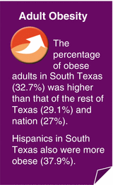
The amount of body fat in an individual is usually estimated by calculating their body mass index (BMI), which takes both weight and height into account. Adults with a BMI of 30 or greater are considered obese [1]. Obesity is associated with increased risk of a host of health problems, including heart disease, stroke, hypertension, hypercholesterolemia, diabetes, osteoarthritis, and several different types of cancer [8, 9]. Because overweight and obesity are usually caused by an energy imbalance (consuming more calories than are used) over a long period of time, poor eating habits and not getting enough physical exercise are two major contributing factors for these conditions [9].
African-American and Mexican-American adults in the USA have higher obesity rates than non-Hispanic white adults [3]. Prevalence of obesity in the USA generally increases with age; adolescents have a higher prevalence of obesity than do children, and older adults tend to have a higher prevalence of obesity than younger adults. In 2009–2010, there was no significant difference in the nationwide prevalence of obesity between women and men [1].
Obesity in South Texas
In 2007–2010, 32.7 % of adults who lived in South Texas were obese. The prevalence of obesity in South Texas was higher than the prevalence of obesity in the rest of Texas (29.1 %) or nation (27.0 %) (Fig. 8.1).
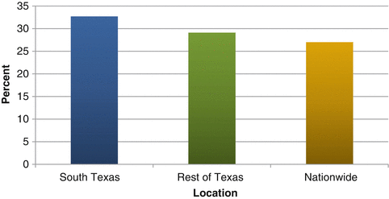
Fig. 8.1
Estimated percent of the adult (18+) population with obesity by location, 2007–2010. Source: Texas Behavioral Risk Factor Surveillance System Combined Year Dataset, Statewide BRFSS Survey, 2007–2010, CDC Behavioral Risk Factor Surveillance System, Nationwide BRFSS Survey, 2007–2010
In South Texas, a higher prevalence of obesity was seen in Hispanic adults (37.9 %) than in non-Hispanic whites (24.6 %). Hispanics in South Texas also had a higher obesity prevalence (37.9 %) than Hispanics in the rest of Texas (34.2 %) (Fig. 8.2).
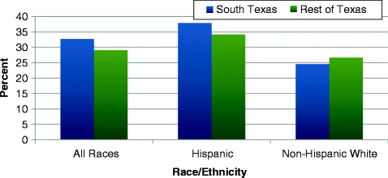
Fig. 8.2
Estimated percent of the adult population with obesity in South Texas and the rest of Texas by race/ethnicity, 2007–2010. Source: Texas Behavioral Risk Factor Surveillance System Combined Year Dataset, Statewide BRFSS Survey, 2007–2010
Age and gender obesity prevalence patterns in South Texas were similar to national trends. The highest age-specific obesity prevalence was observed among adults aged 30–64 (about 36 %). For non-Hispanic whites, the prevalence of obesity was very similar in South Texas metropolitan and nonmetropolitan counties. However, the percent of Hispanics who were obese in nonmetropolitan counties was higher than the percent of obese Hispanics in metropolitan counties (Fig. 8.3).
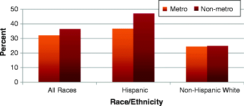
Fig. 8.3
Estimated percent of the adult population with obesity in South Texas by county designation and race/ethnicity, 2007–2010. Source: Texas Behavioral Risk Factor Surveillance System Combined Year Dataset, Statewide BRFSS Survey, 2007–2010
Physical Activity
Engaging in regular physical activity can help reduce the risk of conditions such as obesity, heart disease, diabetes, hypertension, colon cancer, and premature mortality [10]. Regular, moderate levels of exercise each day can lead to improved health and well-being. The CDC recommends that adults either engage in moderate-intensity physical activity for at least 150 min (2 h and 30 min) per week, or engage in vigorous-intensity physical activity for at least 75 min (1 h and 15 min) 3 or more days per week [10, 11].
Even though the benefits of physical activity are well known, more than 50 % of all adults in the USA get less than the recommended amount of physical activity, and 25 % are not active at all during their leisure time. Nationally, fewer women than men get sufficient physical activity. Activity also decreases with age; older individuals are less likely to get adequate physical activity. Inadequate physical activity is more common among adults with lower incomes and less education. Inadequate physical activity is not only a problem for adults—an estimated two-thirds of high-school-aged youth are not engaged in recommended physical activity levels [12].
Inadequate Physical Activity in South Texas
An estimated 51.8 % of adults in South Texas got inadequate physical activity (did not meet weekly recommendations for moderate or vigorous physical activity) during 2007 and 2009. This percentage was similar to the estimated prevalence of inadequate physical activity in the rest of Texas (Fig. 8.4). Adults in South Texas also had a prevalence of inadequate physical activity similar to the national 2007 and 2009 BRFSS estimate (51.1 %).
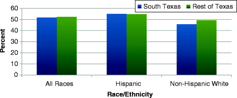
Fig. 8.4
Estimated prevalence of inadequate physical activity among adults (18+) by location and race/ethnicity, 2007 and 2009. Source: Texas Behavioral Risk Factor Surveillance System Combined Year Dataset, Statewide BRFSS Survey, 2007 and 2009
Hispanics in South Texas had a prevalence of inadequate physical activity (55.1 %) that was similar to Hispanics in the rest of Texas (54.8 %). In both South Texas and the rest of Texas, the percent of Hispanics who did not engage in sufficient physical activity was higher than the percent for non-Hispanic whites (Fig. 8.4).
Inadequate physical activity gender and age patterns among South Texas adults were similar to those reported nationwide. In South Texas, inadequate physical activity generally increased with age among both Hispanic and non-Hispanic white adults. Hispanics aged 30–44 and 45–64 had higher prevalences of inadequate physical activity than did non-Hispanic whites of the same age groups (Fig. 8.5).
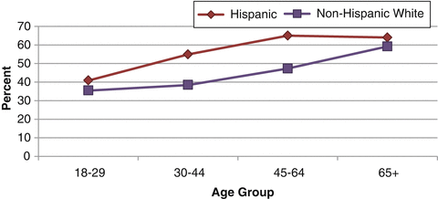
Fig. 8.5
Estimated prevalence of inadequate physical activity among South Texas adults by age group and race/ethnicity, 2007 and 2009. Source: Texas Behavioral Risk Factor Surveillance System Combined Year Dataset, Statewide BRFSS Survey, 2007 and 2009
Nutrition
Good nutrition can help to lower the risk of chronic diseases such as stroke, heart disease, some cancers, osteoporosis, and diabetes [12]. Adequate fruit and vegetable consumption is a key component of good nutrition. Fruits and vegetables contain vitamins, minerals, and fiber that are critical to good health. It is likely that people who consume more generous amounts of fruits and vegetables have a reduced risk of cardiovascular disease and certain cancers than people who eat only small amounts of fruits and vegetables [13]. The U.S. Department of Health and Human Services and the U.S. Department of Agriculture recommend that adults with a 2,000-calorie intake eat 2 cups of fruit and 2½ cups of vegetables every day [14].
Less than one-fourth of adults in the USA had adequate fruit and vegetable consumption (ate five or more servings of fruits and vegetables each day) in 2009. Nationwide, a higher percentage of women had adequate fruit and vegetable consumption than men. Inadequate fruit and vegetable consumption was higher for African-American and Hispanic adults than for other racial/ethnic groups. Younger adult age groups (aged 18–44) were more likely to consume inadequate amounts of fruits and vegetables than older adults (ages 45 and older) [15].
Inadequate Fruit and Vegetable Consumption in South Texas
An estimated 76.2 % of adults in South Texas had inadequate fruit and vegetable consumption (ate less than five servings of fruits and vegetables per day) during 2007 and 2009. This percentage was similar to the percent of adults with inadequate fruit and vegetable consumption in the rest of Texas (75.1 %) and nationwide (75.8 %).
Sex, age, and race/ethnicity patterns of inadequate fruit and vegetable consumption in South Texas were similar to those seen nationwide. Hispanic adults had a higher prevalence of inadequate fruit and vegetable consumption (79.5 %) than non-Hispanic whites (73.4 %), adults in older age groups had a lower prevalence of inadequate fruit and vegetable consumption, and men had a higher percentage of inadequate fruit and vegetable consumption (79.9 %) than women (72.7 %).
Cigarette Smoking Behaviors
Smoking cigarettes harms nearly every organ in the body and can cause many adverse health effects including cancer, cardiovascular disease, and respiratory diseases [16]. Cigarette smoking is currently the leading preventable cause of death in the USA. During 2000–2004, cigarette smoking and exposure to tobacco smoke resulted in 1 out of every 5 deaths (443,000) annually [17, 18].
In 2010, ~19 % of US adults were smokers. Nationally, a higher percentage of men are smokers than women. Hispanics had a lower prevalence of cigarette smoking than did non-Hispanic whites and African-Americans in the USA in 2010. Among adults in the USA, the prevalence of cigarette smoking generally decreases with age [18].
In both the USA and in Texas, ~20 % of all high school students were current cigarette smokers in 2009. An estimated 5 % of middle school students nationwide and 13 % of middle school students in Texas currently smoke cigarettes [19, 20]. In 2010, an estimated 31 % of all secondary students in Texas reported having used a tobacco product in their lifetime. Even though public health activities have lowered the rate of underage cigarette smoking and tobacco use in Texas considerably since 1990, much still remains to be done [20]. Some factors related to youth tobacco use include low socioeconomic status, parents, guardians, siblings, or peers smoking or approving of tobacco use, accessibility, lack of parental support/involvement, and low self-image or self-esteem [19].
Cigarette Smoking in South Texas
Approximately 17 % of adults in South Texas during 2007–2010 were current smokers. The prevalence of adults who were current smokers in South Texas was slightly but not significantly lower than in the rest of Texas (18.1 %) or nation (18.2 %) (Fig. 8.6).
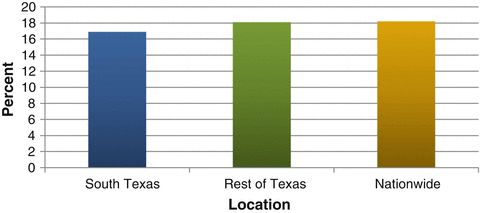
Fig. 8.6
Estimated prevalence of current smoking among adults (18+) by location, 2007–2010. Source: Texas Behavioral Risk Factor Surveillance System Combined Year Dataset, Statewide BRFSS Survey, 2007–2010, CDC Behavioral Risk Factor Surveillance System, Nationwide BRFSS Survey, 2007–2010
Sex and age patterns for smoking prevalence in South Texas during 2007–2010 were the same as reported nationwide. Prevalence of current smoking was similar among both Hispanics (17 %) and non-Hispanic whites (16.8 %) in South Texas. Overall, males in South Texas were 1.8 times more likely to be current smokers than females, and among Hispanics, males were 2.5 times more likely than females to be current smokers (Fig. 8.7).
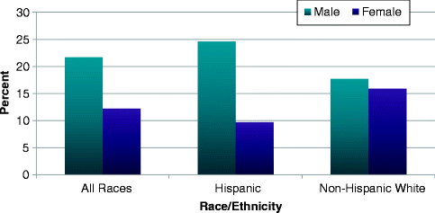
Fig. 8.7
Estimated prevalence of current smoking among South Texas adults by sex and race/ethnicity, 2007–2010. Source: Texas Behavioral Risk Factor Surveillance System Combined Year Dataset, Statewide BRFSS Survey, 2007–2010
The Lower Rio Grande Valley region had a lower percentage of adults who were current smokers (12.2 %) than South Texas as a whole (16.9 %).
Alcohol Use
Alcohol is a nervous system depressant that is rapidly absorbed into the bloodstream after consumption. It affects all organs in the body [21]. Excessive alcohol use has both immediate and long-term associated health risks. Possible immediate effects of excessive alcohol use (usually the result of binge drinking) include unintentional injuries, violence, damage to a fetus if pregnant, and alcohol poisoning. Long-term health risks include neurological problems, cardiovascular disease, depression, liver disease, and some cancers. Excessive alcohol use is the third leading lifestyle-related cause of death in the USA, with ~79,000 deaths per year. In 2005, 1.6 million hospitalizations and more than 4 million emergency room visits were alcohol related [22].
When consumed in moderation, alcohol is thought to have some beneficial effects including a reduced risk of cardiovascular disease and all-cause mortality among older adults [14]. However, excessive alcohol use has no benefits whatsoever, and higher morbidity and mortality rates are seen among those who drink large amounts of alcohol [14, 23].
Alcohol use and abuse is more common among males than females, and among younger adults than older ones [22]. Underage drinking is a major public health problem in the USA. Even though alcohol use is illegal for persons under age 21, youth aged 12–20 drink 11 % of all alcohol that is consumed in the USA. It is estimated that more than 40 % of high school students in the USA drink some amount of alcohol. In 2008, 190,000 emergency room visits by persons younger than 21 could be attributed to injuries and other conditions related to alcohol [22].
Heavy Alcohol Consumption
The U.S. Department of Health and Human Services and the U.S. Department of Agriculture’s Dietary Guidelines for Americans (2010) defines moderate drinking as the consumption of up to one drink a day for women and the consumption of up to two drinks a day for men [14]. Consuming more than one drink per day on average for women or more than two drinks per day on average for men is considered heavy alcohol consumption [22].
Heavy Alcohol Consumption in South Texas
The prevalence of heavy alcohol consumption among adults in South Texas was an estimated 5.5 % in 2007–2010. This prevalence was similar to the percent of heavy alcohol consumption among adults in the rest of Texas (5.0 %) and nation (5.1 %). In South Texas, the prevalence of heavy alcohol consumption was similar between Hispanics (5.4 %) and non-Hispanic whites (5.6 %).
Sex and age patterns for heavy alcohol consumption prevalence in South Texas were the same as observed nationwide. Rates of adult heavy alcohol consumption generally decreased with age (Fig. 8.8), and the prevalence of heavy alcohol consumption was almost twice as high in South Texas males as in females (7.2 % vs. 3.8 %). The prevalence of heavy alcohol consumption was higher, although not statistically significantly higher, in South Texas’s metropolitan counties (5.6 %) than in the nonmetropolitan counties (4.1 %).
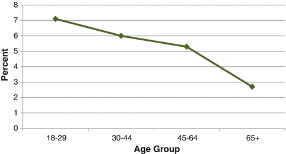
Fig. 8.8
Estimated prevalence of heavy alcohol consumption among South Texas adults by age group, 2007–2010. Source: Texas Behavioral Risk Factor Surveillance System Combined Year Dataset, Statewide BRFSS Survey, 2007–2010
Binge Drinking
A common pattern of excessive alcohol use in the USA is binge drinking. Binge drinking is defined by the National Institute of Alcohol Abuse and Alcoholism as a pattern of alcohol consumption that brings an individual’s blood alcohol concentration (BAC) to 0.08 g percent or greater. For adults, this BAC typically corresponds to drinking five or more drinks in 2 h for males and drinking four or more drinks in 2 h for females [22].
Nationwide, binge drinking is more common among men than women. Binge drinking among underage persons is a problem in the USA. The prevalence of binge drinking in the USA is highest among young adults aged 18–20 (51 %). An estimated one out of every four high school students in the USA binge drink, and more than 90 % of the alcohol consumed by people aged 12–20 is in the form of binge drinks [22].
Binge Drinking in South Texas
In 2007–2010, the prevalence of binge drinking among adults in South Texas was approximately 17.4 %, which was higher than the prevalence for the rest of Texas (14.5 %) and nation (15.1 %). In South Texas, the prevalence of binge drinking was slightly but not statistically significantly higher among Hispanics (18.6 %) than non-Hispanic whites (17.1 %).
The prevalence of binge drinking was much higher for adults aged 18–44 than for adults aged 45 or older. In 2007–2010, approximately one-fourth of all adults aged 18–29 in South Texas binge drank (Fig. 8.9).
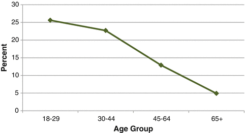
Fig. 8.9
Estimated prevalence of binge drinking among South Texas adults by age group, 2007–2010. Source: Texas Behavioral Risk Factor Surveillance System Combined Year Dataset, Statewide BRFSS Survey, 2007–2010
The prevalence of binge drinking among South Texas males (25.8 %) was 2.7 times higher than the prevalence among females (9.4 %). The prevalence of binge drinking was higher, though not statistically significantly higher, for South Texas metropolitan county residents (17.9 %) than for residents of nonmetropolitan counties (13.6 %).
Cancer Screening Activities
Cancer screening is a means of detecting early signs of cancer in people who do not yet have any symptoms. The goal of screening is not to prevent cancer, but rather to find it as early as possible. Positive results obtained from screening tests are not usually diagnostic but can help to identify individuals in whom cancer might be present and thus should be examined further. For some cancers, screening has the potential to reduce deaths and morbidity, because treatment of early-stage cancers often has a better prognosis and can be less aggressive than treatment of advanced-stage cancers [24]. In order for cancer screening to be effective, the test must have the ability to detect cancers earlier than they could be detected as a result of symptoms, and there must be evidence that earlier detection through screening decreases the risk of dying from the disease. Currently, screening tests exist for a number of cancers including breast cancer, cervical cancer, prostate cancer, and colorectal cancer.
Breast Cancer Screening (Mammogram)
Although the breast self-exam and clinical breast exam are also screening methods, the mammogram is currently thought to be the best way to screen for breast cancer [25]. A mammogram is an X-ray of the breast, which can detect tumors that are too small to feel. The capability of a mammogram to detect breast cancer depends on tumor size, breast tissue density, and the skill of the radiologist [26]. Because the incidence of breast cancer increases with age, the Centers for Disease Control and Prevention (CDC) recommend that women aged 50 or older have a mammogram every 2 years [25].
In 2008 and 2010, an estimated 30.5 % of South Texas women aged 40 or older had not had a mammogram in the past 2 years. This estimate was slightly but not significantly higher than the percentage among women in the rest of Texas (28.1 %) during the same time period. However, both South Texas and the rest of Texas had higher percentages of women who had no mammogram in the past 2 years than was seen nationwide (24 %). A slightly but not significantly higher percentage of Hispanic women in South Texas (31.6 %) were estimated to have not had a mammogram in the past 2 years than non-Hispanic whites (28.2 %).
Cervical Cancer Screening (Pap Test)
The Papanicolaou (Pap) test, also called a Pap smear, is the most common screening procedure for cervical cancer. Cells are lightly scraped from the cervix and vagina using a small wooden stick, a brush, or a piece of cotton. The collected cells are then viewed under a microscope to determine if they are normal or abnormal. A Pap test can find the earliest signs of cervical cancer. Because the chance of curing cervical cancer is very high if the cancer is detected early, studies estimate that regular Pap test screening can decrease incidence and mortality of cervical cancer by 80 % or more [27].Doctors recommend Pap tests for women aged 21 or older, or for women under age 21 who have been sexually active for 3 years or more [28, 29].
An estimated 23.3 % of South Texas women aged 18 or older had not had a Pap test in the past 3 years during 2008 and 2010. This South Texas percentage was higher than the percentage of no Pap test in the past 3 years among women in both the rest of Texas (18.3 %) and nation (17.6 %). In South Texas, the percentages of Hispanic and non-Hispanic white women who did not have a Pap test in the past 3 years were similar.
Prostate Cancer Screening
A couple of screening tests for prostate cancer exist: the digital rectal examination (DRE) and the prostate-specific antigen (PSA) test. However, no standard or routine screening is currently recommended for prostate cancer. This is fact that, although these screening tests are able to find prostate cancer at an early stage, not enough evidence currently exists to determine whether early detection and treatment makes any difference in the outcome of the disease [30]. Studies to determine the efficacy of prostate cancer screening are currently underway.
Prostate-Specific Antigen Test
A PSA test measures the amount of PSA in the blood. PSA is a protein made by the prostate gland. Although it is common for men to have low levels of PSA in their blood, prostate cancer or other conditions can increase PSA levels. Doctors cannot distinguish between prostate cancer and benign prostate conditions such as inflammation or enlargement of the prostate based on PSA levels alone. However, the PSA test result is taken into account when a doctor makes a decision about whether to do additional tests for prostate cancer. Some doctors encourage PSA tests yearly to screen for prostate cancer, starting anywhere from ages 40–50 [8].
In 2008 and 2010, an estimated 47.7 % of men aged 40 and or older had not had a PSA test in the past 2 years. This was very similar to the prevalence of men aged 40 or older who did not have a PSA test in the past 2 years in the rest of Texas (47.4 %). Estimates for South Texas and the rest of Texas were both slightly but not significantly higher than the nationwide prevalence of not having had a PSA test in the past 2 years (45.3 %) (Fig. 8.10).
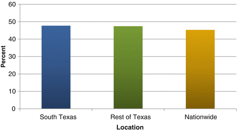
Fig. 8.10
Estimated prevalence of men aged 40 or older who have not had a prostate-specific antigen (PSA) test in the past 2 years by location. Sources: Texas data: Texas Behavioral Risk Factor Surveillance System Combined Year Dataset, Statewide BRFSS Survey, 2008, 2010; National data: CDC Behavioral Risk Factor Surveillance System, Nationwide BRFSS Survey data, 2008 and 2010
In South Texas, Hispanic men were 1.3 times more likely to not have had a PSA test in the past 2 years (54.3 %) than were non-Hispanic white men (41.7 %).
Digital Rectal Exam
DRE is frequently part of a standard physical examination in males. However, it is also another way to screen for prostate cancer and is often performed together with the PSA test to improve the odds of detecting prostate cancer. A doctor performs a digital rectal exam by inserting a lubricated, gloved finger into the rectum to feel the prostate gland through the rectal wall for bumps or anything else abnormal [30, 31].
In 2008 and 2010, an estimated 46 % of men in South Texas had not had a DRE within the past 5 years. This was higher than the prevalence of no DRE within the last 5 years among men in the rest of Texas (38.5 %) and nation (35.6 %). As with PSA testing, Hispanic males in South Texas were more likely to have not had a DRE exam in the past 5 years (57.5 %) than were non-Hispanic white males (33.9 %).
Colorectal Cancer Screening
Several tests are regularly used to screen for colorectal cancer, including the fetal occult blood test (FOBT), sigmoidoscopy, colonoscopy, the double-contrast barium enema (DCBE), and newer techniques such as virtual colonoscopy [32]. Based on several studies, the U.S. Preventive Services Task Force (USPSTF) found evidence that FOBT, sigmoidoscopy, and colonoscopy screening methods are effective in reducing colorectal cancer mortality, and recommends screening using any of these methods for adults aged 50–75 [33].
Fecal Occult Blood Testing
FOBT is a frequently used noninvasive colorectal cancer screening option that checks for hidden blood in the stool. Stool samples are collected at home, placed on special cards, and are then given back to a doctor or lab for testing. Blood in the stool can be indicative of polyps or cancer [32]. Studies have found that for persons aged 50–80, having an annual or biennial FOBT may reduce colorectal cancer mortality by up to 33 % [34]. One of the recommended American Cancer Society colorectal cancer testing options is an annual FOBT for persons aged 50 or older [35].
An estimated 83.9 % of individuals aged 50 or older in South Texas had not had a FOBT in the past 2 years in 2008 and 2010. This South Texas prevalence was similar to the prevalence of no FOBT in the rest of Texas (82.7 %) but was significantly higher than the prevalence seen nationwide (80 %). In South Texas, Hispanics had a higher prevalence of not having an FOBT within the past 2 years (87.5 %) than non-Hispanic whites (81 %).
Sigmoidoscopy/Colonoscopy
Sigmoidoscopy and colonoscopy are two other common colon cancer screening procedures. Sigmoidoscopy checks the rectum and lower colon by inserting a thin, flexible, lighted instrument in through the rectum. A colonoscopy is an examination of the rectum and whole colon for polyps, cancer, or other abnormalities using a similar thin, lighted instrument [32, 34]. Both sigmoidoscopy and colonoscopy procedures have higher sensitivity than FOBT, and colonoscopy is the most sensitive and specific colorectal cancer test [33]. However, unlike FOBT, sigmoidoscopy and colonoscopy are both invasive procedures, and colonoscopy in particular has associated risks such as bleeding or perforation of the colon [33, 34]. Recommended American Cancer Society colorectal cancer testing options for those older than 50 include either a sigmoidoscopy every 5 years, a yearly FOBT, or a colonoscopy every 10 years [35].
In South Texas, an estimated 42.8 % of individuals older than 50 had never had a sigmoidoscopy or colonoscopy in 2008 and 2010. This prevalence was slightly but not significantly higher than the prevalence seen in the rest of Texas (40.2 %) and was statistically significantly higher than the prevalence of no sigmoidoscopy or colonoscopy observed nationwide (35.9 %). As with the prevalence of no FOBT screening, a higher percentage of Hispanics older than 50 in South Texas had never had a sigmoidoscopy or colonoscopy (52.6 %) than non-Hispanic whites (32.4 %).
Summary
Table 8.1
Summary table of adult behavioral risk factor prevalences in South Texas, the rest of Texas, and nationwide
Prevalence (%)a
| |||
|---|---|---|---|
Health indicator | South Texas | Rest of Texas | Nationwide |
Obesity | 32.7 | 29.1 | 27.0 |
Inadequate physical activity | 51.8 | 52.4 | 51.1 |
Inadequate fruit and vegetable consumption | 76.2 | 75.1 | 75.8 |
Current cigarette smoking | 16.9 | 18.1 | 18.2 |
Heavy alcohol consumption | 5.5 | 5.0 | 5.1 |
Binge drinking | 17.4 | 14.5 | 15.1 |
Had no mammogram in past 2 years (women) | 30.5 | 28.1 | 24.0 |
Had no Pap test in past 2 years (women) | 23.3 | 18.3 | 17.6 |
Had no PSA test in past 2 years (men) | 47.7 | 47.4 | 45.3 |
Had no digital rectal exam in past 2 years (men) | 46.0 | 38.5 | 35.6 |
Had no blood stool test in past 2 years | 83.9 | 82.7 | 80.0 |
Never had a sigmoidoscopy/colonoscopy | 42.8 | 40.2 | 35.9 |
References
1.
Ogden C, Carroll M, Kit B, Flegal K. Prevalence of obesity in the United States, 2009–2010. NCHS Data Brief. 2012;82:1–7.PubMed
2.
Centers for Disease Control and Prevention. Childhood overweight and obesity. 2012. http://www.cdc.gov/obesity/childhood/index.html. Accessed May 2012.
3.
Centers for Disease Control and Prevention. Adult obesity facts. 2012. http://www.cdc.gov/obesity/data/adult.html. Accessed May 2012.
4.
Arons A. Childhood obesity in Texas: the costs, the policies, and a framework for the future. 2011. http://www.childhealthtx.org/pdfs/Childhood%20Obesity%20in%20Texas%20Report.pdf. Accessed May 2012.
5.
National Conference of State Legislatures. Childhood overweight and obesity trends. 2012. http://www.ncsl.org/issues-research/health/childhood-obesity-trends-state-rates.aspx. Accessed May 2012.
6.
Freedman DS, Khan LK, Serdula MK, Dietz WH, Srinivasan SR, Berenson GS. The relation of childhood BMI to adult adiposity: the Bogalusa heart study. Pediatrics. 2005;115:22–7.PubMed
7.
National Collaborative on Childhood Obesity Research. Childhood obesity in the United States. 2009. http://www.nccor.org/downloads/ChildhoodObesity_020509.pdf. Accessed May 2012.
8.
Texas Department of State Health Services. The burden of overweight and obesity in Texas, 2000–2040. 2003. http://www.dshs.state.tx.us/obesity/pdf/Cost_Obesity_Report.pdf. Accessed May 2013.
9.
Centers for Disease Control and Prevention. Overweight and obesity. 2012. http://www.cdc.gov/obesity/adult/index.html. Accessed May 2012.
10.
U.S. Department of Health and Human Services. 2008 Physical activity guidelines for Americans. 2008. http://www.health.gov/paguidelines/pdf/paguide.pdf. Accessed June 2012.
11.
Centers for Disease Control and Prevention. Physical activity for everyone: recommendations. 2011. http://www.cdc.gov/nccdphp/dnpa/physical/recommendations/index.htm. Accessed June 2012
12.
Centers for Disease Control and Prevention. Physical activity and good nutrition: essential elements to prevent chronic diseases and obesity, 2008. CS117151. U.S. Department of Health and Human Services, Centers for Disease Control and Prevention; 2008.
13.
Centers for Disease Control and Prevention. Fruits and veggies matter: fruit and vegetable benefits. 2007. http://www.fruitsandveggiesmatter.gov/benefits/index.html. . Accessed June 2012.
14.
U.S. Department of Agriculture and U.S. Department of Health and Human Services. Dietary guidelines for Americans, 2010. 7th ed. Washington, DC: U.S. Government Printing Office; 2010.
15.
Centers for Disease Control and Prevention. Fruit and vegetable consumption data and statistics. 2009. Accessed June 2012.
16.
Centers for Disease Control and Prevention. Fact sheet: health effects of cigarette smoking. 2012. http://www.cdc.gov/tobacco/data_statistics/fact_sheets/health_effects/effects_cig_smoking/index.htm. Accessed June 2012.
17.
Adhikari B, Kahende J, Malarcher A, Pechacek T, Tong V. Smoking-attributable mortality, years of potential life lost, and productivity losses – United States, 2000–2004. MMWR. 2008;57:1226–8.
18.
Centers for Disease Control and Prevention. Fact sheet – adult cigarette smoking in the United States: current estimates. 2012. http://www.cdc.gov/tobacco/data_statistics/fact_sheets/adult_data/cig_smoking/index.htm. Accessed June 2012.
19.
Centers for Disease Control and Prevention. Fact sheet – youth and tobacco use: current estimates. 2012. http://www.cdc.gov/tobacco/data_statistics/fact_sheets/youth_data/tobacco_use/index.htm. Accessed June 2012.
20.
Texas Department of State Health Services. Texans and tobacco: report to the 82nd Texas legislature. 2011. http://www.dshs.state.tx.us/WorkArea/linkit.aspx?LinkIdentifier=id&ItemID=8589952884. Accessed May 2013.
21.
Centers for Disease Control and Prevention. Alcohol and public health: frequently asked questions. 2012. http://www.cdc.gov/alcohol/faqs.htm. Accessed June 2012.
22.
Alcohol and Public Health fact sheets. 2010. http://www.cdc.gov/alcohol/fact-sheets.htm. Accessed June 2012.
23.
24.
National Cancer Institute. Cancer screening overview. 2012. http://www.cancer.gov/cancertopics/pdq/screening/overview/. Accessed June 2012.
25.
Centers for Disease Control and Prevention. Breast cancer – screening. 2012. http://www.cdc.gov/cancer/breast/basic_info/screening.htm. Accessed June 2012.
26.
National Cancer Institute. Breast cancer screening. 2011. http://www.cancer.gov/cancertopics/pdq/screening/breast/. Accessed June 2012.
27.
National Cancer Institute. Cervical cancer screening. 2012. http://www.cancer.gov/cancertopics/pdq/screening/cervical/. Accessed June 2012.
28.
National Women’s Health Information Center. Pap test – frequently asked questions. U.S. Department of Health and Human Services, Office on Women’s Health. 2009.
29.
Centers for Disease Control and Prevention. Gynecologic cancers – cervical cancer screening. 2012. http://www.cdc.gov/cancer/cervical/basic_info/screening.htm. Accessed June 2012.
30.
National Cancer Institute. Prostate cancer screening. 2012. http://www.cancer.gov/cancertopics/pdq/screening/prostate/. Accessed June 2012.
31.
National Cancer Institute. National Cancer Institute factsheet: prostate-specific antigen (PSA) test. 2009. http://www.cancer.gov/cancertopics/factsheet/Detection/PSA. Accessed June 2012.
32.
National Cancer Institute. Colorectal cancer screening. 2011. http://www.cancer.gov/cancertopics/pdq/screening/colorectal/. Accessed June 2012.
33.
U.S. Preventive Services Task Force. Screening for colorectal cancer: U.S. preventive services task force recommendation statement. Ann Intern Med. 2008;149:627–37.CrossRef
34.
National Cancer Institute. National Cancer Institute factsheet: colorectal cancer screening. 2011. http://www.cancer.gov/cancertopics/factsheet/Detection/colorectal-screening. Accessed June 2012.
35.
American Cancer Society. American Cancer Society guidelines for the early detection of cancer. 2012. http://www.cancer.org/docroot/ped/content/ped_2_3x_acs_cancer_detection_guidelines_36.asp. Accessed June 2012.